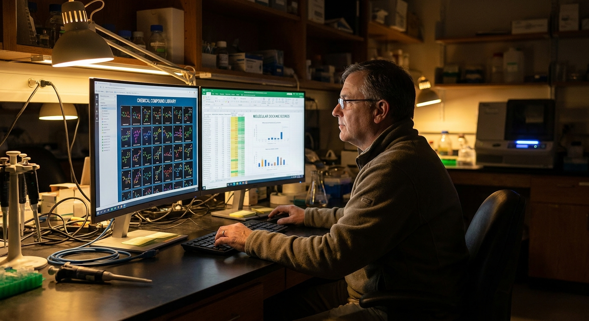

Drug Discovery Workbench
Better decisions.
Faster discovery cycles.
Bring disease biology, molecular design and experimental evidence into one AI workbench. Carry each result into the next decision, with a clear record of how you got there. Our deepest focus is immunology and immuno-oncology.
Start with the biology
Find the targets
worth pursuing.
Connect genetic evidence, multi-omics, literature and structural information to prioritize targets and examine the rationale behind them.
Our deeper research in immunology and immuno-oncology, through the Virtual Cell LLM, aims to strengthen this process with models of cellular state and response.
A connected discovery process
Keep the science moving
between decisions.
Design and evaluate
Explore molecular candidates with generation, structure modeling, docking and property prediction. Review trade-offs across potency, selectivity and feasibility.
Explore discovery capabilities →Assess developability
Bring ADMET, safety and pharmacokinetic modeling into candidate review. Keep predictions linked to their methods and assumptions.
Explore ADMET →Learn from experiments
Connect assay observations with computational results to compare candidates and inform the next round of design.
Discuss your assay loop →A worked example
From target context
to a focused shortlist.
One pass through the workbench, shown end to end. The figures below are illustrative — representative of how the workflow narrows a large candidate set, not a result from a specific program.
Target context
An immuno-oncology target with structural and binding-site context assembled from the evidence.
Target + siteCandidates generated
Structure-aware generation proposes a broad, diverse candidate set.
~2,000Developability
Predicted membrane permeability, metabolic and proteolytic stability, solubility and synthetic feasibility remove liabilities.
~180 passRanked shortlist
Ranked by predicted affinity and developability for synthesis and assay.
12 candidatesIllustrative figures. Every prediction stays linked to its method and assumptions, and candidates remain hypotheses until tested experimentally.
Molecular generation research
Active program · design → evaluate → test → learn, iterating continuouslyA deeper focus
on cyclic peptides.
We are developing generation models focused on cyclic peptides for targets in immunology and immuno-oncology, linking molecular structure and target context with candidate evaluation.
The broader workbench also supports small-molecule discovery workflows. Our cyclic-peptide program builds specialized models within this wider research environment.

Efficiency across the program
Less repeated setup.
More connected learning.
AI helps organize the plan, execute analyses and prepare reviewable results. Reuse data and methods across rounds while your team directs the scientific decisions.
Private deployment options. Your data and results stay yours.